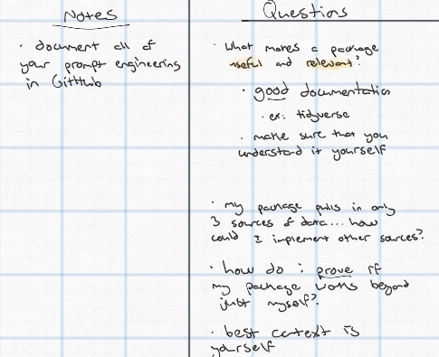
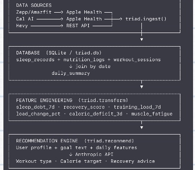
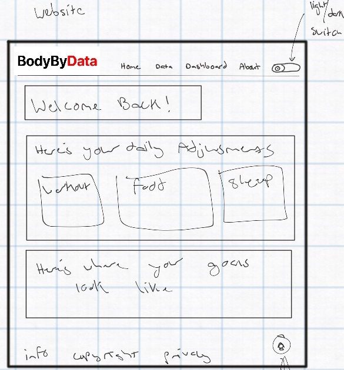

Data Science Senior Project
A personal fitness intelligence pipeline, built to unify sleep, nutrition, and training data into one daily answer.
Public showcase page · full package source is in a private repo during development
01
Three things drive training results: sleep, nutrition, and training itself. Sleep governs recovery, hormone regulation, and muscle repair. Nutrition supplies the fuel for training and the protein for muscle synthesis. Training provides the stimulus that drives adaptation. When one of these is off, the others suffer, and every app on the market tracks only one of them in isolation. Triad pulls all three sources together and tells you, based on actual data, what your body needs today.
02
Zepp and Cal AI both write into Apple Health, and Hevy connects through its own REST API, so three sources collapse into two integration points. Sleep, nutrition, and workout records join by calendar date into a single daily_summary table, the join hub everything downstream reads from. Raw numbers there become signals: sleep debt, a recovery score, training load change, per-muscle-group fatigue. Those signals, plus a free-text goal like "build muscle and lose fat," go to an LLM that reasons over both to produce a workout, a calorie target, and recovery guidance for the day.
03
Triad ships as an installable Python package with a small public API. This is what running it actually looks like.
Install
pip install triadUsage
import triad
# 1. Initialize the database (run once)
triad.setup()
# 2. Create your profile
triad.create_profile(
name="Jonathan",
age=24,
weight_lbs=178,
height_in=66, # 5'6"
sex="male",
goal_text="build muscle and lose fat",
target_sleep_hrs=8.0,
activity_level="active"
)
# 3. Sync your data
triad.sync(
hevy_api_key="your-hevy-api-key",
apple_health_path="path/to/export.xml",
calai_pdf_path="path/to/calai_summary.pdf"
)
# 4. Get today's recommendation
triad.today()Output
════════════════════════════════════════ TRIAD DAILY RECOMMENDATION ════════════════════════════════════════ WORKOUT: Lower Body Strength Upper body is fatigued from yesterday's back session. Legs are fresh, so today is the day for squats and deadlifts. CALORIES: 3200 kcal Running a consistent deficit. Eat at maintenance today to support recovery and fuel the leg session. PROTEIN: 178g target Below target all week. Prioritize it today. RECOVERY: 8+ hours tonight 7-day sleep debt is at 12hrs; compounding fatigue will limit strength gains if not addressed. FLAGS: - Protein critically low: 102g avg vs 178g target this week - Training load increased 110%, monitor for overreaching ════════════════════════════════════════
7-day average protein intake vs. target, from the recommendation above
04
The feature layer translates raw daily numbers into the signals the recommendation engine actually reasons over.
| Feature | Description |
|---|---|
sleep_debt_7d | Cumulative sleep deficit over 7 days (hours) |
recovery_score | 0-100 weighted composite of deep/REM/core sleep quality |
training_load_7d | Total volume lifted in the last 7 days (lbs) |
load_change_pct | Week-over-week training load change (%) |
caloric_deficit_3d | Average daily caloric deficit over 3 days |
protein_avg_7d | Average daily protein intake over 7 days (g) |
{muscle}_volume_48h | Per-muscle-group training volume in last 48 hours |
05
Python 3.11 and 3.12, anthropic for recommendation reasoning, sqlite3 for local storage, the Hevy REST API for workout data, Apple HealthKit for sleep and nutrition, pdfplumber for Cal AI's PDF exports, and pytest for the test suite.
06
Triad started as a Python package: the data foundation. That package is now evolving into BodyByData, a full application built on top of it, where the package handles data normalization and feature engineering while the app adds the intelligence layer, daily recommendations, and a real interface people actually use.
→ See BodyByData07
Triad did not start with a spec. It started with a frustration, a fast prototype, and a lot of iteration with an AI assistant to get from a vague idea to a working recommendation engine. What made it a real engineering project rather than a one-off experiment was documenting every rejected approach, not just the one that worked.
The scoping, May 28: settled on a single research question: can sleep quality and prior training load predict optimal daily workout type and caloric targets for an individual athlete? The name "triad" came from the three inputs: sleep, nutrition, training.
A rejected prompt design: an early draft of the recommendation prompt injected raw numbers only (sleep_debt_7d: -30.78), and the model's response was inconsistent since it had to judge severity itself. The fix was adding explicit severity labels before the numbers ever reached the model, which made outputs consistent instead of guesswork.
A rejected data model: tried mapping goal text to fixed parameters. That broke immediately on real input like "build muscle but don't want to bulk too much." The fix: pass goal text verbatim into the prompt and let the model interpret it, since that's what it is actually good at.
Every one of those wrong first attempts is logged with a timestamp, not cleaned up after the fact.
08
I was never trained to design software architecture. I have just always sketched systems out before writing any code, a habit that started well before I had a name for it. Triad's actual starting point was not a spec or a diagramming tool, it was a notebook.
There is a practical case for sketching first, beyond habit. It gets an idea out of your head fast, before overthinking sets in. It forces a system to break into distinct, ordered sections instead of staying one vague blob, which looks a lot like how Agile breaks a project into small, sequenced pieces before anyone starts building. And it lets you see whether an architecture or an interface would actually work before a single line of code exists, which is a much cheaper place to catch a bad idea.
It also does not require being at a desk. Some of these notes started on a phone, got expanded on an iPad as a passenger in a car, and were only unpacked properly once I sat down at a laptop. There are a hundred ways to plan and build fast, and none of them require waiting for the right setup.
Early Notes

The actual questions that shaped the project, written before any code existed
Two of those questions ended up mattering more than the rest. Asking what makes a package useful and relevant led directly to treating documentation as part of the deliverable rather than an afterthought, the same instinct behind the dev log and prompt journal linked in Process. Asking how to prove the package works beyond just personal use is still an open question, and it is the honest limitation of building on a single-user dataset.
Architecture Sketch → Pipeline

The first pass at the data flow, sketched before a single table existed
This sketch is the direct ancestor of the pipeline diagram in Pipeline. The four stages, ingest, database, feature engineering, and recommendation, never actually changed between this drawing and the finished package. What changed was everything underneath each box.
UI Wireframe → BodyByData

The first wireframe of the app Triad's data would eventually power
The wireframe came from the same notebook, sketched in Concepts on iOS, where I test layout and logo ideas before touching a real design tool. A mixture of Claude, Canva, Figma, and some good ol' intuition took over from there, leading to several different mockups of both the ERD diagram for Triad and the user interface for BodyByData. This drawing's welcome panel, daily-adjustment cards, and goals section are still recognizable in the BodyByData mockup today.
→ See BodyByDataThe Finished Schema
The full data model today: nine tables spanning raw ingestion and derived features, joined by date
09
None of Triad's three data sources were built to talk to each other, and two of them were not built to talk to anything at all. Getting sleep, nutrition, and training into one table meant working around closed APIs and manual exports before a single feature could be engineered.
Cal AI had no way out: its public developer API only supports food scanning, not retrieving personal meal history. The original plan was to fall back on Apple Health, since Cal AI does write there, but it turned out to only write water logs and a single body-mass reading, zero calories or macros. The PDF summary report was not a backup plan, it was the only nutrition path, parsed with pdfplumber and a regex built specifically for its row format.
Zepp does not have a public API: reverse-engineered ones exist but are fragile enough to avoid. Zepp already syncs sleep data to Apple Health natively, so Apple Health became the bridge instead of the source.
Hevy had a working API, and it still did not help: the sandbox used to build the ingestion script could not reach outside network calls at all. The fallback was Hevy's CSV export, which meant reconstructing 167 full workout sessions out of 2,308 flat, one-row-per-set rows by grouping on workout title and start time.
Apple Health's own export nearly broke the parser: a single XML file, 314MB, too large to load into memory in one pass. The fix was rewriting the parser around streaming iterparse() with an explicit element clear after every record, so memory stayed flat no matter the file size.
The most expensive problem was not technical. After joining all three sources by date, only 4 days had sleep, nutrition, and training data at once, nowhere near enough to build anything on. The root cause was a nutrition app that had stopped being used months before the project started. Once the Cal AI PDF parser was working, that number went from 4 complete days to 15.
10
Triad was a data science senior project, but building it end to end pulled in work well outside a stats curriculum. Below is the specific skill work behind each part of the project, tied to what actually demonstrates it.
| Skill | Tools Used | How It Was Applied |
|---|---|---|
| Python packaging | Python 3.11 / 3.12, setuptools | Structured as an installable package with a small public API: setup(), sync(), recommend(), today() |
| REST API integration | Hevy REST API, Apple HealthKit, pdfplumber | Built one ingest layer pulling workout, sleep, and nutrition data from three separate sources into a common format |
| Database design | SQLite | Designed the schema joining sleep, nutrition, and training records by date into a single daily_summary table |
| Feature engineering & applied statistics | Python | Computed sleep debt, recovery score, training load change, and per-muscle-group fatigue from raw daily numbers |
| Prompt engineering | Anthropic Claude API | Structured severity-labeled inputs and free-text goals so the model reasons consistently instead of guessing (see Process) |
| Technical documentation | Markdown, GitHub | Maintained a README, a dev log, and a prompt engineering journal, timestamped throughout the build |
| Front-end development | HTML, CSS, JavaScript, Chart.js, highlight.js | Hand-built this page: a custom SVG diagram, real syntax highlighting, and a live data chart |
| Visual and brand design | Concepts, Canva, Figma | Sketched early wireframes and logo concepts, then iterated on the wordmark, color system, and layout carried across this page and BodyByData |